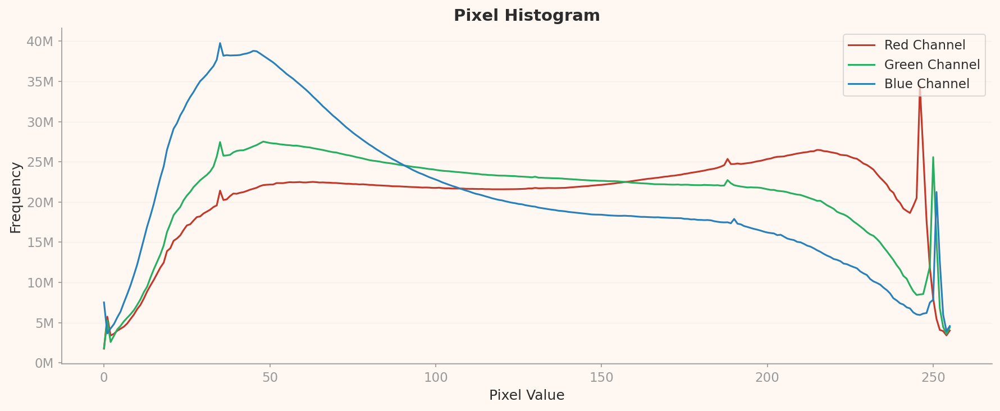

Executive Summary
DataClinic이 생성하는 L1 픽셀 히스토그램, L2 밀도 등고선, L3 클러스터 분포는 모두 ISO/IEC 5259-2의 품질측정기준(QM) 항목과 1:1 대응 관계를 가진다. 이 기사는 세 개의 공개 데이터셋 — ImageNet(1,431,167장), WikiArt(81,444장), SpectralWaste(2,794장) — 의 실제 진단 결과를 Bal-ML, Div-ML, Rep-ML 등 구체적인 QM 코드로 직접 매핑하는 방법론을 제시한다. 세 데이터셋은 각각 다른 실패 패턴을 보여준다 — 규모가 품질을 보장하지 않는다(ImageNet), 편향은 숫자가 아닌 밀도에서 온다(WikiArt), 소규모 데이터셋에는 구조적 한계가 있다(SpectralWaste).
DataClinic L1은 Com-ML-1, Con-ML-1/3, Bal-ML-1/2/3, Div-ML-1/2/3 항목을 자동으로 커버한다. L2/L3는 Sim-ML-1/2/3, Rep-ML-1, Eft-ML-1/2/3, Acc-ML-7을 신경망 기반으로 측정한다. DataClinic이 자동으로 커버하지 않는 Aud-ML, Cur-ML, Acc-ML-2(라벨 정확도) 등의 항목은 메타데이터 분석, 시각적 샘플 검토, C2PA 툴킷 등 별도의 방법으로 측정할 수 있다.
이 기사를 읽고 나면 독자는 자신의 DataClinic 진단 리포트를 펼쳐서 "이 수치가 ISO 5259의 어떤 항목인지"를 즉시 대응시킬 수 있게 된다. DataClinic은 ISO 5259의 측정 도구이고, ISO 5259는 DataClinic의 해석 프레임이다.
규모가 품질을 보장하지 않는다
Bal-ML-1 Fail
개 품종 120개 / 전체 12%
편향은 밀도에서 드러난다
Idn-ML-1 Warn
블랑샤르 효과 / 133:1 불균형
소규모의 구조적 한계
Com-ML-1 Fail
2,794장 / 19.6:1 불균형
1 DataClinic → ISO 5259 매핑 프레임워크
1편에서 확인한 것처럼 이미지 데이터셋의 품질은 픽셀 레이어와 작업 레이어라는 두 겹의 구조를 가진다. DataClinic의 3단계 진단 체계 역시 이 두 레이어를 순서대로 파고든다 — L1은 픽셀, L2/L3는 임베딩 공간을 통해 작업 의미를 포착한다. 두 체계가 같은 방향을 향하고 있다는 사실은 DataClinic 차트를 ISO QM 코드로 직접 번역할 수 있음을 의미한다. QM 코드 체계 전체를 한 장으로 보려면 ISO/IEC 5259-2 QM 치트시트를 먼저 참고하길 권한다.
DataClinic 진단 레벨 ↔ ISO 5259-2 QM 커버리지
| 진단 레벨 | 무엇을 측정하는가 | ISO 5259-2 QM 항목 |
|---|---|---|
| L1 — 픽셀 통계 | 클래스 수·샘플 수, 결측치, RGB 채널 분포, 해상도 범위, 클래스별 이미지 수 막대차트 | Com-ML-1, Con-ML-1 Con-ML-3, Bal-ML-1 Bal-ML-2 Bal-ML-3, Div-ML-1 Div-ML-2 Div-ML-3 |
| L2 — 범용 임베딩 | Wolfram 1,280차원 특징 공간의 밀도 분포, 클러스터, 이상치, 유사도 쌍 | Sim-ML-1 Sim-ML-2 Sim-ML-3, Rep-ML-1, Eft-ML-1 Eft-ML-2 Eft-ML-3, Acc-ML-7 |
| L3 — 도메인 임베딩 | BLIP 이미지-텍스트 매칭 기반 의미 밀도 분포, 클래스 간 의미 이동 | Rep-ML-1, Acc-ML-2 (부분), Idn-ML-1 (데이터 출처 패턴) |
| DataClinic 미지원 | 라벨 정확도 직접 측정, 저작권·라이선스 감사, 수집 시점 메타데이터, 이식성 | Acc-ML-2, Aud-ML-1, Cur-ML-1, Rel-ML-1, Tml-ML-1, Por-ML-1 |
핵심 원리
DataClinic L1의 클래스 막대차트가 길고 짧음 — 이것은 Bal-ML-1(클래스 균형)이다. L2의 밀도 등고선에서 한쪽에 집중된 구름 — 이것은 Div-ML-2(클러스터 다양성)이다. L3의 저밀도 샘플이 다른 클래스의 시각적 특성을 가진다 — 이것은 Acc-ML-7(라벨 이상 탐지 대리지표)이다. DataClinic이 "무엇을 보여주는지"를 알면, ISO 5259가 "그것을 무엇이라 부르는지"는 위 표로 즉시 번역된다.
DataClinic 외의 방법으로 측정하는 미지원 QM 항목
- Acc-ML-2 (라벨 정확도) — DataClinic L3의 저밀도 샘플을 추출하여 시각적으로 검토한다. 저밀도 = 해당 클래스의 전형에서 멀리 떨어진 샘플 = 오라벨 후보다. Northcutt et al.(2021)이 ImageNet에서 이 방식으로 85,870건의 오류를 발견했다.
- Aud-ML-1 (저작권·라이선스 감사) — C2PA 메타데이터 툴킷으로 이미지별 출처 서명을 확인한다. WikiArt처럼 저작권 민감 데이터셋에서 특히 중요하다.
- Cur-ML-1 (특징 최신성) — 이미지 EXIF 메타데이터에서 촬영 연도를 추출하거나, 크롤링 수집 로그의 타임스탬프를 분석한다.
- Sim-ML-1 (중복 이미지) — pHash(지각적 해시) 기반 유사도로 거의 동일한 이미지 쌍을 탐지한다. 소규모 데이터셋에서 특히 중요하다.
2 ImageNet — 규모가 품질을 보장하지 않는다
ImageNet은 클래스당 732~1,300장의 샘플을 갖추어 수치적으로는 균형 잡힌 것처럼 보인다. 그러나 DataClinic의 진단은 이 표면 아래에 세 가지 구조적 문제를 드러낸다. 1편의 두 레이어 관점에서 보면, ImageNet의 픽셀 레이어는 비교적 양호하지만 작업 레이어에서 치명적 결함이 나타난다. DataClinic 60점(보통)은 이 두 레이어의 비대칭을 정확히 반영한 점수다.
L2 밀도 기반 샘플 — 고밀도(전형) vs 저밀도(이상)
고밀도 — 전형적 샘플 (peacock, titi, patas, guenon)


저밀도 — 이상 샘플 (flute, lens cap, espresso maker, coffeepot)


출처: DataClinic Report #123 — ImageNet. 고밀도: 영장류·공작 클러스터 집중. 저밀도: 주방용품 카테고리가 임베딩 공간 외곽에 위치 (Acc-ML-7 대리 지표).
DataClinic L2 — PCA 전체 분포 → Div-ML-2 (클러스터 다양성)

범용 시각 특징(L2) 기준 임베딩 공간. 중심부에 밀집한 영장류·조류 클러스터가 Div-ML-2(클러스터 다양성) 부족 신호다.
DataClinic L3 — PCA 전체 분포 → Rep-ML-1 (도메인 대표성)

의미 특징(L3) 기준 재배치. L2 대비 임베딩 구조가 달라지며 공작새 중심 클러스터가 분산된다 — Rep-ML-1(도메인 대표성) 진단의 핵심 근거.
DataClinic L2 — 거리-밀도 분포 → Rep-ML-1 (밀도 편향)

중심까지 거리 대비 밀도. 고밀도 샘플이 중심에 편중되고 저밀도 샘플이 외곽에 산재하는 구조 — Rep-ML-1 위험 구간을 시각화한다.
| DataClinic 진단 차트·수치 | ISO 5259-2 QM 코드 | 판정 |
|---|---|---|
| L1 — 전체 이미지 수 1,431,167장, 결측치 0건 | Com-ML-1 (값 완전성) | Pass |
| L1 — 개 품종 120클래스 / 전체 1,000클래스의 12%, 의미론적 과밀집 | Bal-ML-1 (클래스 균형) | Fail |
| L1 — Blue 채널 pixel=255에서 ~16억 스파이크, pixel=0에서 ~8.3억 스파이크 | Con-ML-1 (픽셀 일관성) | 주의 |
| L2 — 밀도 등고선에서 공작새(peacock) 클러스터가 생물 특징 공간을 지배 | Div-ML-2 (클러스터 다양성) | Fail |
| L3 — 공작새 중심 임베딩이 타란툴라 등 비생물 클래스로 이동하는 패턴 | Rep-ML-1 (도메인 대표성) | Fail |
| L3 — 저밀도 샘플(이상치) 집중 분석 → Northcutt et al.(2021) 85,870건 오류 교차검증 | Acc-ML-7 (라벨 이상 대리지표) | 주의 |
Bal-ML-1: 수치 균형과 의미 균형의 차이
DataClinic L1의 클래스별 이미지 수 막대차트에서 ImageNet의 1,000개 막대는 732~1,300장 사이에서 비교적 균일하게 분포한다. 이 막대차트가 보여주는 것은 Bal-ML-1(클래스 균형)의 수치적 측면이다. 그러나 같은 막대차트를 의미론적으로 읽으면 이야기가 달라진다 — 요크셔 테리어, 실키 테리어, 베들링턴 테리어를 비롯한 개 품종 120개의 막대가 전체 1,000개 막대 중 12%를 차지한다. ISO 5259는 Bal-ML-1을 단순 수치가 아닌 "의도한 목적에 비추어 본 클래스 분포"로 정의한다. 이 기준으로 ImageNet의 Bal-ML-1은 Fail이다.
Div-ML-2 vs Rep-ML-1: L2와 L3가 잡는 것의 차이
DataClinic L2의 밀도 등고선(density plot)에서 ImageNet의 생물 클래스 — 특히 공작새(peacock) 그룹 — 가 특징 공간의 중심부를 점유하며 높은 밀도 피크를 형성한다. 이 현상이 ISO 5259의 Div-ML-2(클러스터 다양성)로 해석된다. L2 단계에서 임베딩 공간이 생물 특성에 편향되어 있다면, 비생물 클래스(도구, 악기, 가구)는 저밀도 영역으로 밀려난다. 모델은 "개를 잘 구분하는" 방향으로 최적화되고, 실제 응용 환경의 다양한 객체를 인식하는 능력은 약화된다.
DataClinic L3로 분석 렌즈를 바꾸면 다른 차원의 문제가 드러난다. L3는 BLIP 이미지-텍스트 매칭 기반의 의미 임베딩을 사용하기 때문에, L2에서 공작새 클러스터로 보이던 패턴이 L3에서는 공작새-타란툴라 전환 패턴으로 재해석된다. 이는 Rep-ML-1(도메인 대표성)의 문제다. 데이터셋이 실제 시각 세계의 다양성을 대표하지 못하고, 특정 생물학적 분류 체계의 세분류에 과적합되어 있다.
Acc-ML-2: DataClinic 외의 방법으로 라벨 정확도를 측정하는 방법
Acc-ML-2(라벨 정확도)는 DataClinic이 직접 측정하지 않는 항목이다. 그러나 DataClinic L3의 저밀도 샘플은 이 항목의 측정 출발점이 된다. 저밀도 샘플이란 해당 클래스의 전형적 특성에서 멀리 떨어진 이미지 — 다시 말해 오라벨의 유력한 후보다. Northcutt et al.(2021)이 실제로 이 방법론을 적용하여 ImageNet 검증 세트에서 85,870건에 달하는 라벨 오류를 발견했다. 전체 이미지의 약 6%에 해당하는 이 오류는 딥러닝 10년의 기준점이 된 데이터셋에 내재된 구조적 결함이었다. DataClinic L3로 저밀도 샘플을 추출하고, 이를 시각적으로 검토하는 프로세스가 Acc-ML-2 측정의 현실적 대안이다.
ImageNet 핵심 매핑 요약
DataClinic이 보여주는 "클래스당 1,200장" 막대차트는 Bal-ML-1의 수치적 합격이다. 그러나 "개 품종 120개가 12%를 점유한다"는 사실은 Bal-ML-1의 의미론적 실패다. L2 공작새 밀도 집중은 Div-ML-2 Fail이고, L3 임베딩 이동은 Rep-ML-1 Fail이다. DataClinic 60점의 의미가 여기서 구체화된다.
3 WikiArt — 편향은 숫자가 아닌 밀도에서 온다
WikiArt는 세 데이터셋 중 DataClinic 점수(53점/나쁨)가 가장 낮다. 133:1의 극단적 클래스 불균형(인상주의 13,060장 vs 분석적 큐비즘 98장), Red 채널의 이중봉(bimodal) 분포, L3에서의 특정 화가 집중 — 이 세 가지 패턴이 어떤 QM 코드로 번역되는지 살펴본다. 특히 L2와 L3가 서로 다른 차원의 편향을 잡아내는 방식이 흥미롭다.
L2 밀도 기반 샘플 — 고밀도(전형) vs 저밀도(이상)
고밀도 — Minimalism·Color Field 집중


저밀도 — Abstract Expressionism·Naive Art 이상 샘플


출처: DataClinic Report #115 — WikiArt. 고밀도: 단색 추상화(Minimalism·Color Field) 집중 → Div-ML-2 위험. 저밀도: 구상·사실주의 계열이 임베딩 외곽에 분산.
DataClinic L1 — 픽셀 채널 히스토그램 → Con-ML-1 (픽셀 일관성)

Red 채널에서 뚜렷한 이중 봉우리(bimodal)가 확인된다. 사조별 색상 프로파일이 분열되어 있다는 신호 — Con-ML-1(픽셀 일관성) 위반의 직접 근거.
DataClinic L2 — PCA 전체 분포 → Div-ML-2 (장르 다양성)

범용 시각 특징 기준 PCA. 팝아트 클러스터가 메인 군집에서 분리되어 단독으로 위치한다 — Div-ML-2 이상의 시각적 증거.
DataClinic L3 — PCA 전체 분포 → Idn-ML-1 + Rep-ML-1 (Antoine Blanchard 과밀집)

의미 특징(L3) 재배치. 특정 작가(Antoine Blanchard)의 작품이 인상파 구역에 과밀집 — Idn-ML-1(데이터 출처 식별) 및 Rep-ML-1(대표성) 동시 위반.
DataClinic L2 — 거리-밀도 분포 → Div-ML-2 (밀도 편향)

단색 추상화(Minimalism·Color Field)가 고밀도 중심부를 점령하고 구상·사실주의가 외곽에 산재한다 — Div-ML-2 위험을 수치로 확인하는 차트.
| DataClinic 진단 차트·수치 | ISO 5259-2 QM 코드 | 판정 |
|---|---|---|
| L1 — Impressionism 13,060장 vs Analytical_Cubism 98장 (133:1 비율) | Bal-ML-1 (클래스 균형) | Fail |
| L1 — Red 채널 히스토그램 이중봉 분포 (인상파 붉은 톤 + 고전파 어두운 톤) | Con-ML-1 (픽셀 일관성) | Fail |
| L2 — Pop Art 클러스터가 나머지 사조와 분리된 고립 군집 형성 | Div-ML-2 (클러스터 다양성) | Fail |
| L3 — Antoine Blanchard(파리 거리 화가)가 인상파 구역에서 초고밀도 집중 | Idn-ML-1 (데이터 출처 식별) | 주의 |
| L3 — 인상파 임베딩 공간 전체가 블랑샤르의 시각적 특성으로 편향 | Rep-ML-1 (도메인 대표성) | Fail |
| L1 — 전체 81,444장, 결측치 0건 (완전성 자체는 양호) | Com-ML-1 (값 완전성) | Pass |
Con-ML-1: Red 채널 이중봉이 말하는 것
DataClinic L1의 Red 채널 히스토그램은 WikiArt에서 특이한 이중봉(bimodal) 분포를 보인다. 낮은 값(어두운 톤) 쪽의 봉우리와 중간-높은 값(붉은 톤) 쪽의 봉우리가 동시에 존재한다. 이것은 Con-ML-1(픽셀 일관성)의 문제다. 원인은 미술사적 구조다 — 고전주의, 르네상스, 바로크 회화는 어두운 배경과 절제된 색채를 사용하고, 인상주의와 후기 인상주의는 강렬한 붉은 계열의 팔레트를 구사한다. 이 두 화풍의 분포가 단일 데이터셋에서 혼재하면서 픽셀 공간에 이중봉이 형성된다. 단순한 "RGB 통계 확인"이 아니라, 도메인 지식과 결합했을 때 비로소 Con-ML-1의 원인이 진단된다.
L2 vs L3: 두 렌즈가 잡는 것이 다르다
WikiArt의 가장 흥미로운 진단 결과는 L2와 L3가 서로 다른 편향을 포착한다는 점이다. DataClinic L2(범용 임베딩)에서 팝 아트(Pop Art) 클러스터가 전체 특징 공간에서 고립된 군집을 형성한다. 이는 Div-ML-2(클러스터 다양성) 문제다. 팝 아트의 강렬한 원색, 사진 기반 이미지, 대형 평면 구성은 다른 전통 회화 사조와 시각적으로 크게 다르기 때문에, 범용 특징 추출기가 팝 아트를 별개의 "매체 단층선"으로 분리한다.
L3(BLIP 의미 임베딩)로 전환하면 팝 아트 문제 대신 전혀 다른 편향이 드러난다. 인상파 구역에서 Antoine Blanchard(앙투안 블랑샤르)의 파리 거리 풍경 시리즈가 극도로 높은 밀도를 형성한다. 블랑샤르는 같은 구도, 같은 색채, 같은 주제로 수백 점의 작품을 반복 제작한 화가다. L3 임베딩 공간에서 이 반복성이 고밀도 클러스터로 나타나고, 결과적으로 "전형적인 인상파"의 의미를 블랑샤르의 시각 언어가 정의하게 된다. 이것이 Idn-ML-1(데이터 출처 식별)과 Rep-ML-1(대표성) 문제다. 한 화가의 반복 작품이 전체 사조의 대표성을 왜곡한다.
L2 vs L3: 두 렌즈의 교훈
L2가 잡은 것은 매체의 편향(팝 아트 단층선) — 시각적 스타일이 전통 회화와 다른 장르가 분리된다. L3가 잡은 것은 출처의 편향(블랑샤르 집중) — 반복 작품을 가진 작가가 의미 공간을 지배한다. 같은 데이터셋을 두 렌즈로 분석하면 서로 다른 QM 항목의 문제가 나타난다. 이것이 DataClinic의 다단계 진단 체계가 가진 가치이며, ISO 5259가 다수의 QM 항목을 병렬로 정의하는 이유다.
Aud-ML-1: WikiArt의 저작권 문제를 어떻게 측정하는가
Aud-ML-1(저작권·라이선스 감사)은 DataClinic이 직접 측정하지 않는 항목이다. WikiArt는 저작권 측면에서 복잡한 상황에 있다 — 20세기 이후 작가의 작품은 아직 저작권 보호 대상이고, 일부 이미지는 미술관의 디지털 복제 정책에 따라 사용이 제한된다. 이 항목의 측정을 위해서는 각 이미지의 C2PA(Content Credentials) 메타데이터를 확인하거나, Creative Commons 라이선스 분류 데이터베이스와 교차 검증하는 별도 파이프라인이 필요하다. DataClinic이 이 영역을 다루지 않는다는 사실은 결함이 아니라 역할 분담이다 — DataClinic은 이미지 내용의 품질을 측정하고, 법적·거버넌스 측면의 QM은 별도 도구로 보완한다.
WikiArt 핵심 매핑 요약
L1 Red 채널 이중봉 = Con-ML-1 Fail. 133:1 클래스 불균형 = Bal-ML-1 Fail. L2 팝 아트 고립 클러스터 = Div-ML-2 Fail. L3 블랑샤르 고밀도 집중 = Idn-ML-1 주의 + Rep-ML-1 Fail. DataClinic 53점(나쁨)은 이 다섯 개의 QM 실패로 구성된다.
4 SpectralWaste — 소규모 산업 데이터의 구조적 한계
SpectralWaste는 세 데이터셋 중 가장 작고, DataClinic 점수는 68점으로 중간이지만, ISO 5259 관점에서는 가장 구조적인 한계를 드러내는 사례다. 프로토타입 컨베이어 벨트에서 수집된 이 데이터셋은 "실험실 품질 vs 실제 환경 대표성"이라는 소규모 산업 데이터의 전형적 딜레마를 담고 있다.
L1 콜라주 — 6개 클래스 대표 이미지

출처: DataClinic Report #618 — SpectralWaste. 6개 클래스 대표 이미지. 클래스 간 시각적 유사성과 Styrofoam 클래스의 절대 수량 부족이 L1 수준에서 이미 확인된다.
DataClinic L1 — 클래스별 평균 이미지 → Com-ML-1 + Bal-ML-1

bag

basket

cardboard

filament

paper

styrofoam ⚠️
6개 클래스 평균 이미지. Styrofoam 클래스(우측 하단)는 흐릿한 평균 이미지로 샘플 수 절대 부족을 보여준다 — Com-ML-1 Fail의 시각적 근거.
| DataClinic 진단 차트·수치 | ISO 5259-2 QM 코드 | 판정 |
|---|---|---|
| L1 — 전체 2,794장 (산업 배포 기준 충분한 절대 수량 미달) | Com-ML-1 (값 완전성 / 수량) | Fail |
| L1 — video_tape 646장 vs filament 33장 (19.6:1 불균형) | Bal-ML-1 (클래스 균형) | Fail |
| L1 — 전체 결측치 0건, 라벨 완전성 100% | Com-ML-3 Com-ML-5 | Pass |
| L2 — 전체 임베딩이 단일 구름으로 밀집 (환경 다양성 없음) | Div-ML-1 (환경 다양성) | Fail |
| L3 — 고밀도 집중 → 컨베이어 벨트 단일 환경만 대표, 실제 재활용 현장 미반영 | Rep-ML-1 (도메인 대표성) | Fail |
| L2 — filament 클래스의 샘플이 basket·bag 임베딩 구역과 혼재 | Con-ML-2 (라벨 일관성) | 주의 |
Com-ML-1 + Bal-ML-1: 수량 부족과 불균형의 이중고
DataClinic L1에서 SpectralWaste의 클래스별 이미지 수 막대차트는 즉각적으로 두 가지 사실을 보여준다. 첫째, 전체 2,794장이라는 절대 수량이 산업 배포 기준으로는 부족하다 — 이것이 Com-ML-1 Fail이다. 실제 재활용 공장의 컨베이어 벨트 모델을 상용 배포하려면 최소 수만 장 이상의 학습 데이터가 필요하다. 둘째, video_tape(646장)와 filament(33장)의 19.6:1 불균형이 Bal-ML-1 Fail이다. 가장 적은 클래스(filament)의 절대 수량이 33장에 불과하다는 사실은, 수치적 비율 이전에 학습 자체가 가능한지를 의심하게 만든다.
Div-ML-1: 임베딩 밀집이 보여주는 환경 다양성 부재
DataClinic L2의 밀도 분포에서 SpectralWaste의 모든 샘플은 특징 공간의 좁은 영역에 조밀하게 모여 있다. 이 단일 구름(single cloud) 패턴은 Div-ML-1(환경 다양성) Fail의 시각적 증거다. 모든 이미지가 같은 컨베이어 벨트, 같은 조명 조건, 같은 카메라 각도에서 촬영되었기 때문에, 임베딩 공간에서 다양성이 존재할 여지가 없다. L3의 고밀도 집중은 같은 문제의 의미론적 버전이다 — "컨베이어 벨트 위의 물체"라는 단일 맥락만 대표하고, 실제 재활용 현장의 다양한 환경(야외 분리수거 시설, 이동식 선별기, 다른 조명 조건)은 전혀 반영하지 않는다. 이것이 Rep-ML-1(도메인 대표성) Fail이다.
Eft-ML-3: 수집 효율성을 높이는 방법론
Eft-ML-3(수집 효율성)은 DataClinic이 완전히 측정하지 않는 항목이다. SpectralWaste의 경우 이 항목은 데이터 증강(augmentation) 전략으로 부분적으로 해결할 수 있다. 같은 물체를 서로 다른 조명 조건(형광등, 자연광, 역광), 서로 다른 촬영 각도(정면, 30도, 45도), 서로 다른 컨베이어 속도 설정에서 재촬영하면 Div-ML-1과 Rep-ML-1을 동시에 개선할 수 있다. DataClinic L2의 임베딩 공간에서 현재 단일 구름이 여러 개의 분산된 구름으로 확장된다면, 그것이 Eft-ML-3 개선의 직접적 증거가 된다.
Sim-ML-1(중복 이미지)은 소규모 데이터셋에서 특히 주의가 필요한 항목이다. SpectralWaste처럼 프로토타입 장비에서 연속 촬영된 데이터셋은 거의 동일한 프레임이 반복될 가능성이 높다. DataClinic이 L2 유사도 분석에서 근접 쌍(nearest pairs)을 보여주지만, pHash(지각적 해시) 기반의 중복 탐지를 별도로 실행하면 Sim-ML-1을 정밀하게 측정할 수 있다. 2,794장 중 중복 이미지 비율이 높다면 실질 학습 데이터는 더 적어진다.
SpectralWaste 핵심 매핑 요약
L1 총 수량 2,794장 = Com-ML-1 Fail (산업 배포 기준). 19.6:1 불균형 = Bal-ML-1 Fail. L2 단일 구름 밀집 = Div-ML-1 Fail. L3 고밀도 집중 = Rep-ML-1 Fail. DataClinic 68점(보통)이 이 네 개의 구조적 실패에도 불구하고 나온 이유는, 결측치 0건과 라벨 완전성 100%(Pass) 덕분이다. 픽셀 레이어는 합격이지만 작업 레이어가 전면 실패하는 전형적 패턴이다.
5 세 사례 비교 매트릭스
세 데이터셋을 ISO 5259-2 QM 항목 기준으로 나란히 놓으면 실패 패턴의 공통점과 차이점이 선명해진다. "DataClinic 자동 판정" 열은 진단 수치로 직접 판정 가능한 항목이고, "수동 보완 필요" 열은 DataClinic 외의 방법이 필요한 항목이다.
| QM 항목 | QM ID | ImageNet | WikiArt | SpectralWaste | 측정 방법 |
|---|---|---|---|---|---|
| 정확성 (Accuracy) | |||||
| 라벨 정확도 | Acc-ML-2 | Fail ~6% 오류 |
수동 검토 필요 | 수동 검토 필요 | L3 저밀도 샘플 시각 검토 |
| 라벨 이상 탐지 | Acc-ML-7 | 주의 | 주의 | 주의 | DataClinic L3 (자동 대리지표) |
| 완전성 (Completeness) | |||||
| 값 완전성 | Com-ML-1 | Pass | Pass | Fail 수량 부족 |
DataClinic L1 (자동) |
| 균형성 (Balance) | |||||
| 클래스 균형 | Bal-ML-1 | Fail 의미론적 편중 |
Fail 133:1 |
Fail 19.6:1 |
DataClinic L1 (자동) |
| 다양성 (Diversity) | |||||
| 환경 다양성 | Div-ML-1 | 주의 | 주의 | Fail | DataClinic L2 (자동) |
| 클러스터 다양성 | Div-ML-2 | Fail 공작새 지배 |
Fail 팝 아트 단층선 |
주의 | DataClinic L2 (자동) |
| 대표성 (Representativeness) | |||||
| 도메인 대표성 | Rep-ML-1 | Fail | Fail 블랑샤르 편향 |
Fail 단일 환경 |
DataClinic L3 (자동) |
| 일관성 (Consistency) | |||||
| 픽셀 일관성 | Con-ML-1 | 주의 Blue 스파이크 |
Fail Red 이중봉 |
Pass | DataClinic L1 (자동) |
| 유사성 (Similarity) | |||||
| 중복 이미지 | Sim-ML-1 | Pass | 주의 | 수동 필요 | pHash 분석 보완 |
| 식별가능성 (Identifiability) | |||||
| 데이터 출처 식별 | Idn-ML-1 | 해당 없음 | 주의 블랑샤르 패턴 |
해당 없음 | DataClinic L3 (부분) |
| 감사가능성 (Auditability) | |||||
| 저작권·라이선스 | Aud-ML-1 | 수동 필요 | Fail 저작권 위험 |
수동 필요 | C2PA 메타데이터 분석 |
| 최신성 (Currentness) | |||||
| 특징 최신성 | Cur-ML-1 | 주의 2009년 수집 |
주의 | 수동 필요 | EXIF 타임스탬프 분석 |
| 유효성 (Effectiveness) | |||||
| 수집 효율성 | Eft-ML-3 | Pass | 주의 | Fail 단일 환경 |
DataClinic L2/L3 + 보완 |
매트릭스에서 읽히는 공통 패턴
세 데이터셋 모두 Bal-ML-1과 Rep-ML-1에서 Fail을 받았다. 데이터셋의 규모·도메인·목적이 완전히 달라도, 클래스 균형과 도메인 대표성은 가장 공통적으로 실패하는 항목이다. DataClinic L1이 Bal-ML-1을, L3가 Rep-ML-1을 자동으로 포착한다. 이 두 항목만 집중 모니터링해도 세 데이터셋의 핵심 품질 위험을 조기에 탐지할 수 있다.
6 결론 — 두 레이어의 책임 분리
세 사례를 관통하는 하나의 원리가 있다. 픽셀 레이어의 문제 — 채널 분포, 결측치, 포맷 일관성 — 는 DataClinic이 자동으로 포착한다. 그러나 작업 레이어의 문제 — 의미론적 불균형, 도메인 대표성 부재, 출처 편향 — 는 DataClinic이 데이터를 보여주지만, 그것이 무엇을 의미하는지는 데이터 수집 설계 단계에서 인간이 결정해야 한다. ImageNet의 개 품종 120개, WikiArt의 블랑샤르 효과, SpectralWaste의 단일 환경 촬영은 모두 DataClinic L3에서 관찰 가능하지만, 그 원인은 데이터 수집 정책에 있다.
ISO 5259 기반 진단의 실전 순서
DataClinic L1 실행
클래스 막대차트로 Bal-ML-1 확인. RGB 채널 히스토그램으로 Con-ML-1 점검. 전체 수량과 결측치로 Com-ML-1 판정.
DataClinic L2 실행
밀도 등고선으로 Div-ML-1/2 확인. 클러스터 고립 여부로 Div-ML-2 판정. 저밀도 샘플 목록으로 Acc-ML-7 대리 측정.
DataClinic L3 실행
의미 임베딩의 고밀도 집중 패턴으로 Rep-ML-1 판정. 출처 편향 패턴이 감지되면 Idn-ML-1 플래그. 저밀도 샘플 시각 검토로 Acc-ML-2 보완.
미지원 항목 수동 검증
pHash 중복 탐지로 Sim-ML-1. C2PA 메타데이터로 Aud-ML-1. EXIF 타임스탬프로 Cur-ML-1. 도메인 전문가 검토로 Acc-ML-2 최종 확인.
이 기사에서 시도한 매핑 — DataClinic 진단 수치를 ISO 5259-2 QM 코드로 직접 번역하는 작업 — 은 아직 표준화된 프로세스가 없는 영역이다. ISO 5259가 AI 학습 데이터 품질의 이론적 프레임을 제공한다면, DataClinic은 그 프레임을 실제로 측정 가능하게 만드는 도구다. 두 체계가 결합될 때, 데이터 품질 진단은 "점수를 받는 행위"에서 "어떤 QM 항목이 왜 실패했고, 어떻게 개선할 것인가"라는 구체적 질문으로 전환된다.
"DataClinic은 ISO 5259의 측정 도구이고, ISO 5259는 DataClinic의 해석 프레임이다."
DataClinic이 L1에서 클래스 막대차트를 보여줄 때, 그것은 Bal-ML-1을 측정하고 있다. L2에서 밀도 등고선을 그릴 때, 그것은 Div-ML-2와 Rep-ML-1을 측정하고 있다. L3에서 저밀도 샘플을 추출할 때, 그것은 Acc-ML-7의 대리지표이자 Acc-ML-2의 출발점이다. 이 매핑을 이해하는 순간, DataClinic 리포트는 진단 결과지에서 ISO 5259 준수 체크리스트로 변환된다.
시리즈 연결
이 시리즈의 1편 "이미지 데이터셋 품질은 두 레이어다 — ISO/IEC 5259 적용 이론" 에서는 픽셀 레이어와 작업 레이어의 이론적 구분, 23개 QM 체계의 전체 매트릭스, DataClinic 자동화 지원 수준을 다뤘다. ISO/IEC 5259-2 표준의 QM 코드 체계를 한 장으로 정리한 ISO/IEC 5259-2 QM 치트시트도 함께 활용하면 이 기사의 매핑 작업을 더 빠르게 따라갈 수 있다. 개별 데이터셋의 상세 진단 보고서는 ImageNet 평가, WikiArt 평가, SpectralWaste 평가 에서 확인할 수 있다.